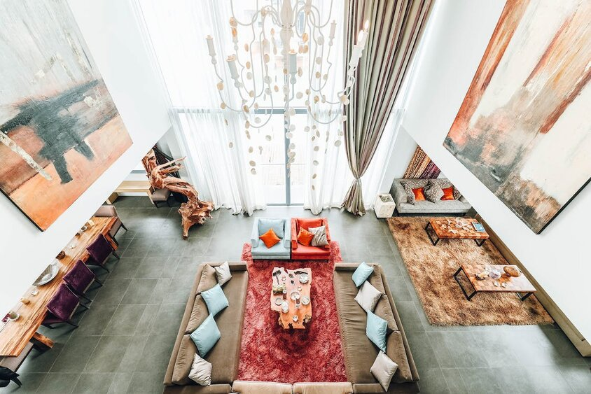

About Us
Rugs Are Us is a family-owned and operated business that has been serving the community for over X years. Our passion for rugs began when we were children, and we've always loved the way they can make a home feel more inviting and comfortable.
Our Mission: Our mission is to help you find the perfect rug for your home. We believe that everyone deserves to have a beautiful rug that they love, and we're here to make that happen.
Our Quality: We're committed to providing our customers with the best possible quality rugs. All of our rugs are made from high-quality materials and are built to last.
Our Selection: We offer a wide variety of rugs from all over the world, including traditional, contemporary, and designer rugs. We also have a large selection of rugs in all shapes and sizes, so you can find the perfect rug for your space.
Our Expertise: Our team of experts is always happy to help you find the perfect rug for your needs. We can help you choose the right rug for your style, budget, and space.
Our Guarantee: We're so confident in the quality of our rugs that we offer a 100% satisfaction guarantee. If you're not happy with your rug, you can return it for a full refund.
